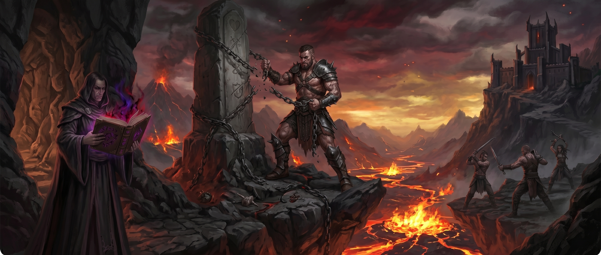
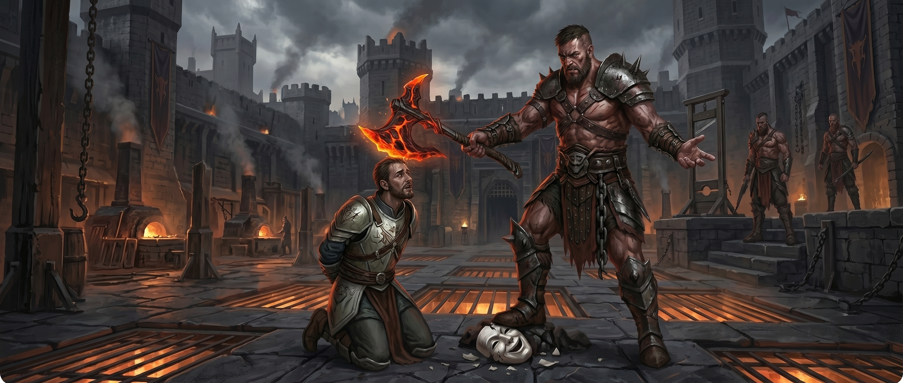
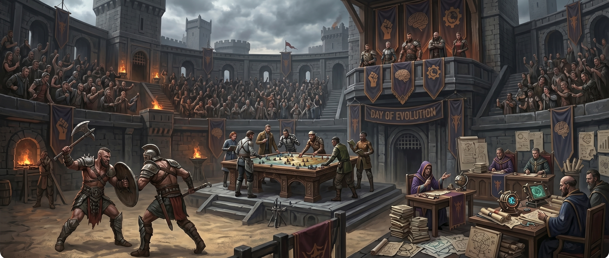
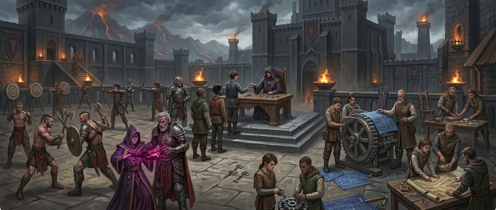
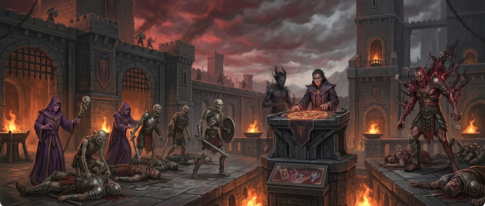
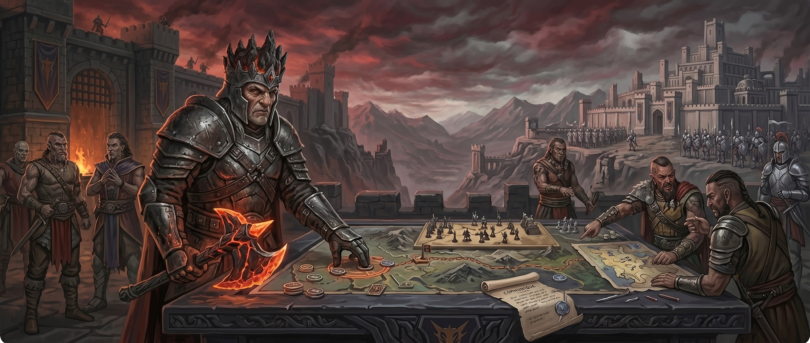

An in-depth look at the societal norms, ruthless meritocracy, and unapologetic philosophy carried by the citizens of the Dominion.

Militant Nihilism
The core philosophy of the Kharos culture revolves around reaching the pinnacle of human potential. They view moral restraint as a chain that must be broken—an obstacle preventing mankind from achieving its ultimate form. For this reason, those who achieve excellence in any context, from martial to academic, are handsomely rewarded.
They could be described as "militant nihilists": if life has no inherent meaning, then they are free to create their own while enjoying existence to its fullest. They believe that "Might makes Justice" and the world is based on the principle that only the fittest should survive; everyone else is seen as "just another animal."

The Authentic Self
While their culture may be based on fundamentals considered "evil" by most societies, for them, being evil is not inherently bad. A "good" lawful person wouldn't kill someone who wronged him but would try to hand him over to authorities for a judgment. An "evil" person, however, has the right to do exactly what they want. If they want to kill the person, they can; if they want to save them, they can.
They don't see themselves as "merciless warriors," but rather as authentic people who have thrown their masks away to embrace their full self. They despise the rigid rules of Lawful factions, viewing them as a hypocritical facade used to hide one's true, selfish nature.

The Day of Evolution
While their philosophy may look too cruel for "good cultures," it actually makes their society exceptionally high-performing and efficient. If you are not fit for your position, you will be replaced, ensuring the "best" is always in the right place.
To enforce this, there is a day called the "Day of Evolution," which happens once a year. For every leadership role, all subordinates face one another in a tournament to prove who is the best—fighting for martial roles, tactics for leaders, or knowledge for scholars. Every participant puts forth their own "challenge" for other contestants. The person who wins the most challenges earns the right to compete with their leader, and the winner of that final clash becomes the new leader.
Education and Specializations
Survival of the fittest begins at birth. Children born in the Dominion are given a basic education and, from an early age, are trained to fight with their peers. This harsh upbringing ensures that only the strong and capable thrive in their society.
Once they become teenagers, they must pick a "specialization":
Civil Roles – Teachers, maintenance workers, hunters, cooks, and other foundational jobs.
Martial Roles – Warriors, wizards, archers, and tacticians.
In general, civil roles are less valued than martial ones. However, only a blind person could fail to see the sheer necessity of civil roles to keep the Dominion's war machine running, so they are still mostly respected and properly integrated into the social hierarchy.


Pragmatism and The Dark Arts
Because they have no qualms about the methods used to achieve their goals, the Dominion has fully embraced necromancy as an efficient way to bolster their forces. They show no respect for the bodies of friends or foes alike, viewing human remains as mere resources that are better utilized on the battlefield than left to rot in the dirt.
Furthermore, their pursuit of absolute power often leads them to strike contracts with devils. They are willing to borrow otherworldly power in exchange for their health, cherished possessions, or even their souls. While some prodigies master these dark arts and ascend the ranks, many others fall victim to the demons they sought to control, suffering terrible and gruesome fates.

Diplomacy and Strategic Hostility
The faction is primarily Chaotic Evil and behaves in a completely selfish manner toward other powers. If others are perceived as a nuisance or a threat, the Dominion will strike with lethal hostility. However, if a neighbor lives peacefully or offers no strategic gain through conflict, they are rarely attacked. The "degree" of this hostility depends entirely on the current Warchief and is never set in stone.
They harbor a deep-seated, ancestral hostility toward the Valkyrion Empire due to a past defeat. While the Dominion dreams of revenge, the two forces are currently evenly matched, and a full-scale war would likely result in no clear winner. Despite their seething anger, the Dominion is not foolish: they prioritize profit and strategic advantage above all, choosing to wait until the odds are undeniably in their favor.